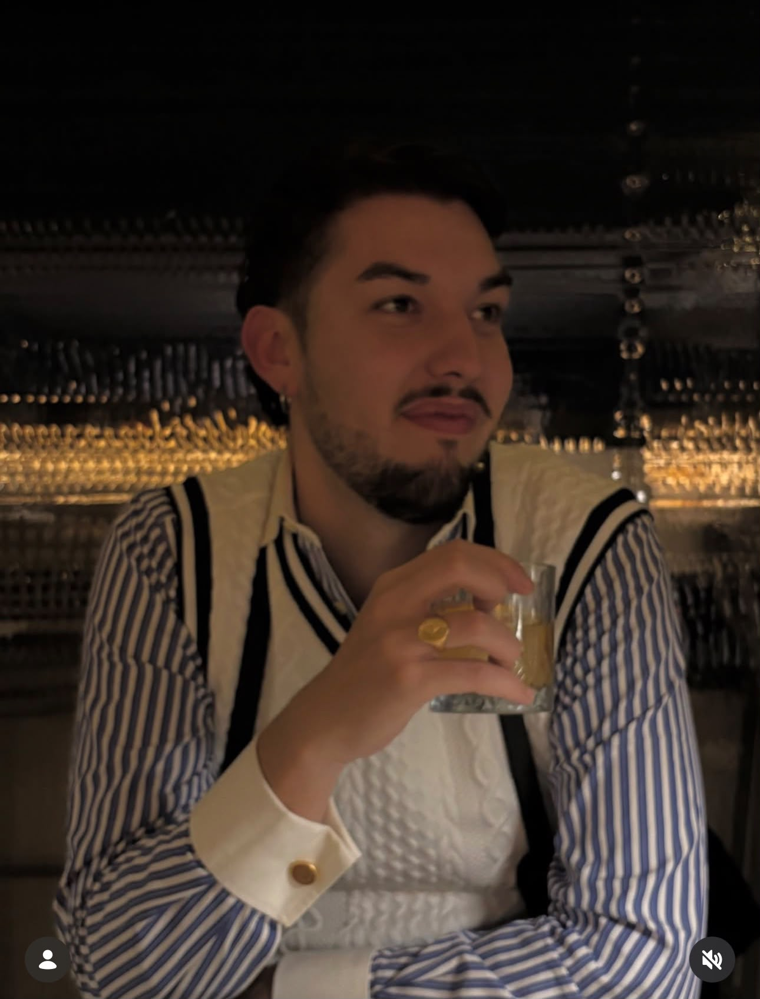

His father, Vladimir Fissenko, was born in the USSR, one of eight brothers. Their father was a naval engineer in the Soviet navy; their mother a doctor, who sometimes operated through the power cuts. Vladimir was thirteen when his own father was killed, run over by a tram. At twenty, already in the military, he had a daughter, Alionka, with his high-school girlfriend, and wouldn't learn she existed until years later.
He trained in film school, and in 1986 he escaped the Soviet Union for Paris, working odd jobs and living, by chance, in the same building as his future wife's grandparents, a Cossack colonel's son who'd once been assigned to guard the Tsar and fled instead. It was that great-grandfather who told Vladimir to go find "the girl" in Rome, and to bring homemade vodka when he did. Vladimir was teaching Russian at the University of Paris when he met Louis, and together, from 1988 to 1993, they rode horses from Tierra del Fuego to Alaska, the length of two continents, later the subject of a documentary. Somewhere along that ride he had another daughter, Luciana — Nikolai wouldn't learn about her until after his father's death, and the two are in touch now. Afterward he lived alone on a houseboat in Sausalito for a year, until word came that Sophie's grandfather had died. He invited her to San Francisco; she worked for Alitalia, so the flight was easy. They married a year later. Nikolai was born in Tarquinia in 1996.
His mother, Sophie, grew up in Paris, came to Rome on a holiday, and never really left. She bought the house in Blera because Rome had gotten too expensive, and because she'd fallen in love with the place. Her own family carried its own history of exile: her father, a journalist from Granada, had fled Franco's Spain; her mother sold private jets.
The house was a ruin when Vladimir first saw it. He taught himself stonemasonry and spent Nikolai's early childhood rebuilding it, board by board, stone by stone. Nikolai grew up on a building site. When he wasn't in Blera, he was in Paris with his grandmother, or in Spain. The family was always moving. Relatives visited constantly, from Paris, from Saint Petersburg, and Nikolai, still a child, was already leading them through the Etruscan tombs that ring the village, his actual playground, and into Rome. He was a baby guide before he knew the word for it.
His parents divorced when he was nine, undone by his father's drinking. American friends invited him and Sophie to live in Atlanta for a year. It was a hard transition, and he loved it anyway. That's where he started drumming, every summer at Pepperland Music Camp, and where he went to a Waldorf school. They ended up staying six years, because Sophie met Joseph, a Chicago businessman who later founded the Sustainability Leadership Forum, uniting Fortune 500 executives across seven cities around sustainable, environmentally grounded business models. Joseph played varsity basketball in college and thought like a philosopher; without ever being asked to, he became Nikolai's second father. His mother, meanwhile, trained as a psychosomatic therapist. Nikolai grew up playing football, hockey, basketball, fencing, cycling, and drumming in the school jazz band and whatever band would have him. His uncle Victor was the person he was closest to as a kid, because the rest of the family never stayed still.
At sixteen the family moved to San Francisco, Atlanta having gotten too car-dependent, wanting a change. It was there Nikolai realized an American athletic or academic scholarship wasn't realistic for him, and that he didn't want to stay in the US anyway. He sat the entrance exam for a high school in Viterbo and moved back in with his father in Blera, a decision most of the family thought was crazy, except for Victor, one of its biggest supporters. The visitors never stopped coming, and neither did he, still showing family and friends through the tombs, into Rome, this time out of real curiosity rather than habit.
Victor died in 2016, of HIV, just as Nikolai was about to leave for college, one of the most influential people in his life. After school he went to Rome for university, political science and international relations, the obvious choice for someone carrying three passports, American, Italian, French, and five languages in his mouth: French from his mother, Russian from his father, English from six years in America, Spanish from his grandfather, Italian from the place he'd grown up. His thesis was on jazz diplomacy, the roughly 30 tours the US State Department financed for its most influential jazz artists, sent through territories that mattered strategically to American foreign policy. He fell in love with Giulia, a photographer and philologist who now digitizes manuscripts at the Vatican. He also started a band, Noble Sin, the real reason he never left Rome. Its debut album came out in 2025, a bucket-list moment that felt almost like earning a second degree; a second record is coming. He took an admin job to cover rent while chasing the idea of being a rockstar, and through that job met people running tours in the city. He started freelancing with them, and it clicked: guiding wasn't something he was learning. It was something he'd been doing since he was nine years old. He isn't good at it just because he speaks the languages his guests speak, he's good at it because he belongs to the cultures behind them.
Rome kept getting more expensive to live in, and at some point he gave up his car and started getting everywhere by bike instead. Riding the city that much, he kept picking up the history of whatever street or ruin he happened to be passing, on top of what he'd studied properly in his international relations days, another piece of what makes him a good guide. The biking also turned him into something of a bikefluencer, and led to StreetSmart, an app he's building now that grades roads the way ski slopes are graded, by how dangerous they are for cyclists, with the ambition of becoming something like Waze for bikes.
His father died in 2023, of cirrhosis. Since then, going back to Blera hasn't come easily; it's been a sad place to be. In 2026, in the middle of an otherwise hard stretch of his life, he went for a weekend there with his sister Alina, Noble Sin's singer. Talking with Maria Grazia at Bar Paradiso, she reminded him of what he'd nearly forgotten: how his sister Alionka, visiting from Russia, had loved olive picking, and how his stepbrother David, thoroughly American, had loved learning to make gnocchi from scratch. That conversation is where Rasna came from.
He doesn't do this for the money; he charges enough to live free of financial worry, no more. He does it because these are experiences you can only have as part of a community, not bought off a shelf, and he wants to share the one that raised him with people the way he always has, since he was nine years old, leading relatives through the tombs because it was simply what you did.
"I'm not showing people a culture. I'm doing what I've done since I was nine, bringing people I care about into the community I grew up in."

Ready to plan your own trip to Blera?
Build your expedition